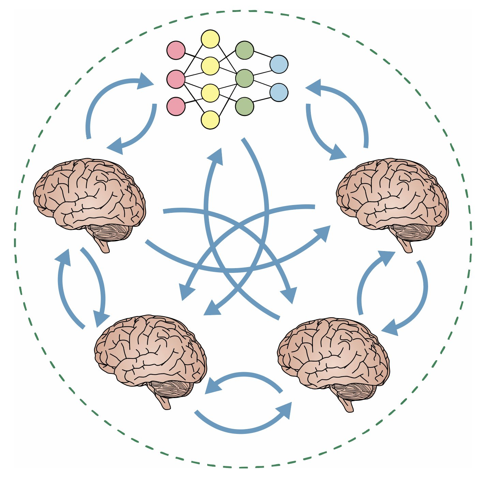

|
Imran Thobani I am a Postdoctoral Scholar in Ophthalmology at Stanford University. I am a member of the NeuroAILab (advised by Dan Yamins), as well as a member of the Enigma Project (advised by Andreas Tolias). My current research focuses on developing large-scale foundation models of the brain to gain scientific insights and for downstream biomedical applications. I completed my Ph.D. in Philosophy in 2025 at Stanford University, where I was advised by Rosa Cao (primary advisor), Dan Yamins, and Thomas Icard. If you are interested in working together, please do not hesitate to get in touch via email. |
Education
Ph.D. in Philosophy and Symbolic Systems with a minor in Psychology, Stanford University (2025)
|
Research |
|
|
 |
Model-brain comparison using inter-animal transforms
Imran Thobani, Javier Sagastuy-Brena, Aran Nayebi, Jacob Prince, Rosa Cao, Daniel Yamins Proceedings of Cognitive Computational Neuroscience, 2025 Our new method, the Inter-Animal Transform Class (IATC), is a principled way to compare neural network models to the brain. It's the first to ensure both accurate brain activity predictions and specific identification of neural mechanisms. (Here is the original CCN version: you should read the Arxiv version, but cite the CCN version.) Here is a recording of a contributed talk I gave about this work at CCN 2025: |

|
A triviality worry for the internal model principle
Imran Thobani Synthese, 2024 This paper provides a philosophical critique of purported mathematical proofs that intelligent agents must instantiate an internal model of their environment in order to successfully interact with it. |